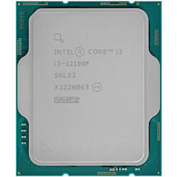
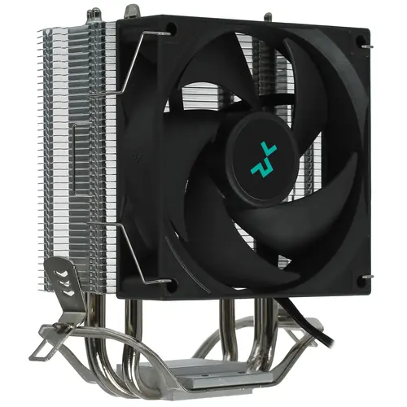
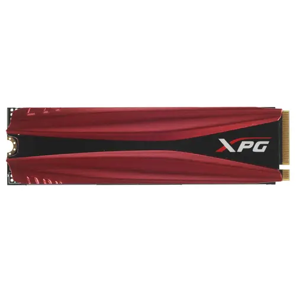
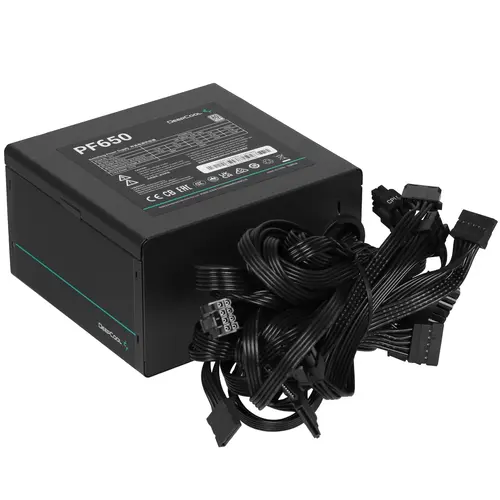

Готовая сборка компьютера за 80000рублей
Комплектующие компьютера
Процессор

Отличная производительность: 6 ядр и 12 потоков с тактовой частотой до 4,3 ГГц обеспечивают высокую скорость обработки задач. Энергоэффективность: Низкое энергопотребление (65 Вт) делает его подходящим для компактных сборок и ноутбуков. Поддержка PCIe 4.0: Поддержка новейшего стандарта PCIe 4.0 позволяет использовать более быстрые накопители и графические карты. Бюджетная цена: Относительно низкая цена по сравнению с другими процессорами 12-го поколения делает его доступным вариантом для геймеров и создателей контента с ограниченным бюджетом. Отсутствие встроенной графики: Отсутствие встроенной графики снижает стоимость процессора, делая его идеальным выбором для сборок с дискретной видеокартой. Совместимость с существующими материнскими платами: Совместимость с материнскими платами на чипсетах Intel B660, H670 и Z690 позволяет использовать существующие компоненты.
Материнская плата
.webp)
Материнская плата MSI PRO H610M-E DDR4 является отличным выбором для пользователей, которые ищут надежное и функциональное устройство для своего компьютера. Вот несколько причин, почему стоит выбрать именно эту модель: Чипсет Intel H610: Поддержка процессоров Intel 12-го поколения, включая Alder Lake и Raptor Lake, обеспечивает высокую производительность и эффективность работы. Двухканальный режим DDR4: Возможность использования двух модулей оперативной памяти DDR4 с частотой до 3200 МГц обеспечивает быстрый доступ к большим объемам данных и улучшает общую производительность системы. Слоты расширения: Материнская плата оснащена слотами PCI-Express 4.0, что позволяет использовать современные видеокарты и другие устройства с высокой пропускной способностью. Встроенный сетевой адаптер: Интегрированный контроллер Realtek RTL8111H обеспечивает быстрое и стабильное подключение к сети, что особенно важно для онлайн-игр и работы с сетевыми приложениями.
Видеокарта

Производительность: RTX 4060 обеспечивает высокую производительность благодаря своему графическому процессору AD102 и архитектуре NVIDIA Lovelace. Она может обрабатывать сложные задачи и игры с высокими настройками графики, обеспечивая плавный и приятный игровой процесс. Поддержка Ray Tracing: RTX 4060 поддерживает технологию Ray Tracing, что позволяет создавать более реалистичное освещение и тени в играх. Это делает графику более насыщенной и добавляет глубину в изображения. DLSS 3: RTX 4060 также поддерживает DLSS 3, который увеличивает частоту кадров и улучшает качество изображения без потери производительности. Это особенно полезно для геймеров, которые хотят получить максимальную производительность от своих систем.
Кулер

Улучшение производительности: Кулер DEEPCOOL AG300 обеспечивает эффективное охлаждение процессора, что позволяет ему работать на максимальной производительности без перегрева. Низкий уровень шума: Кулер DEEPCOOL AG300 оснащен тихим вентилятором, который обеспечивает эффективное охлаждение при минимальном шуме. Прочность и надежность: Кулер DEEPCOOL AG300 выполнен из качественных материалов, что обеспечивает его долговечность и надежность. Легкая установка: Кулер DEEPCOOL AG300 легко устанавливается на процессор благодаря простой конструкции и комплекту прилагаемых инструкций. Стильный дизайн: Кулер DEEPCOOL AG300 имеет современный и эстетичный дизайн, который будет отлично смотреться в любом сборке ПК.
Оперативная память

Высокая производительность: оперативная память ADATA XPG GAMMIX D20 обеспечивает быструю передачу данных и обработку больших объемов информации благодаря высокой тактовой частоте и низким задержкам. Надежность: продукция ADATA известна своей надежностью и долговечностью. Благодаря качественным компонентам и строгим тестированиям, оперативная память ADATA XPG GAMMIX D20 обеспечивает стабильную работу вашего компьютера долгое время. Стильный дизайн: оперативная память ADATA XPG GAMMIX D20 имеет стильный и современный дизайн, который добавит эстетический вид вашему компьютеру и подчеркнет его производительность. Широкая совместимость: оперативная память ADATA XPG GAMMIX D20 поддерживает различные платформы и чипсеты, что делает ее идеальным выбором для различных систем Поддержка разгонных режимов: благодаря возможности работы в разгонных режимах, оперативная память ADATA XPG GAMMIX D20 позволяет получить дополнительный прирост производительности вашего компьютера.
Накопитель

Производительность: SSD M.2 накопитель ADATA XPG GAMMIX S11 Pro обладает высокой скоростью чтения и записи данных, что делает его идеальным для работы с большими объемами информации, быстрой загрузки приложений и операционной системы. Надежность: ADATA известен своей стабильностью и надежностью продукции, что подтверждает высокую долговечность SSD накопителя XPG GAMMIX S11 Pro. Вы можете быть уверены, что ваши данные будут в безопасности. Емкость: 1000 ГБ обеспечат вам достаточно места для хранения большого количества файлов, игр, программ и мультимедийного контента Удобство установки: SSD M.2 имеет компактный форм-фактор и легкую установку, что позволяет использовать его в широком спектре устройств, включая ноутбуки и настольные компьютеры. Отличное соотношение цена-качество: ADATA предлагает свои продукты по адекватной цене, тогда как качество и производительность накопителя XPG GAMMIX S11 Pro останутся на высоком уровне.
Блок питания

Надежность и качество: DEEPCOOL - это известный производитель компьютерных комплектующих, который известен своими надежными и качественными продуктами. PF650 обладает высоким уровнем надежности и долговечности. Эффективность: DEEPCOOL PF650 имеет высокую эффективность работы блока питания, что позволяет снизить потребление энергии и уменьшить тепловыделение. Мощность: PF650 обладает достаточной мощностью (650 Вт) для питания современных компонентов компьютера, включая мощные процессоры и видеокарты. Хорошие отзывы от пользователей: DEEPCOOL PF650 имеет положительные отзывы от пользователей, которые отмечают его надежность, производительность и тихую работу.
Корпус